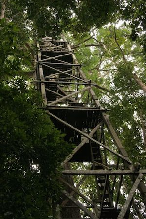
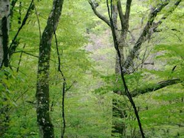
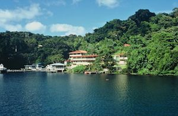

調査地
ランビル国立公園
ボルネオ北東部に位置するランビル国立公園は、京都大学生態学研究センターの海外拠点です．最大樹高70mにも達するフタバガキ林が広がっています．
京都大学生態学研究センター(生態研)は、設立当初から海外拠点を設立し、積極的に海外での フィールドワークを行ってきました．京都大学には、海外に多くの教育・研究拠点がありますが、熱帯雨林生物多様性研究拠点(ランビル国立公園)は、 その中でもっとも長期に渡って研究を行ってきた拠点の一つです．
ランビル国立公園では、1999年より京都大学のほか、愛媛大学、大阪市立大学などの大学が、ハーバード大(米国)、サラワク森林局(マレーシア)が共同で、長期生態観測を始めました． 当時同センターに在籍していた故井上民二教授は、今後多様性の問題に取り組む上で、熱帯における林冠生物学が重要になると考え、ランビル国立公園にツリータワー、ウォークウェーといった林冠を観察するための施設を建設しました． これらの施設を使った昆虫個体群動態や植物の活動を長期モニタリングした研究は、世界的にも高く評価されています．今後、地球環境変動のさまざまな影響が問題になっている現在、このような長期的視野に立った研究の重要性はますます増していくでしょう． 京都大学のほか、高知大学、東京大学、愛媛大学、名古屋大学、総合地球環境学研究所、その他多数の機関に所属する日本人の熱帯林研究者が、マレーシアの研究者と協力し研究を行っています。小川群落保護林
落葉樹の林
茨城県北茨城市にある森林総合研究所の小川試験地にはイヌブナ、ブナ、ミズナラ、コナラなどが優占した原生林が広がっています．森林総合研究所の研究者らと、原生林での植物の更新や森林の断片化が繁殖に及ぼす影響などについて調べました．
パナマ
新熱帯の林
学術振興会の海外特別研究員として赴任したパナマでは、スミソニアン熱帯研究所の主要な3つの森林調査地、パナマ運河に浮かぶ島、バロコロラド島と太平洋側、大西洋側2つの林冠クレーンサイトで調査を行っていました．